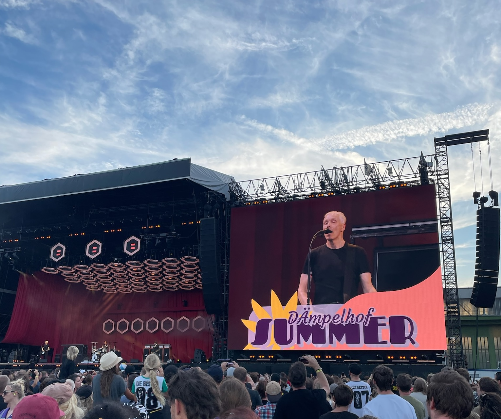

My soundtrack for life
It's all about my musical world - from personal playlists and favorite artists to the next concerts I'm going to see live.
Indie

Metal

Where it all began
Die Ärzte
The music of the punk band “Die Ärzte” was the first I actively started listening to. To this day, the songs of Die Ärzte have influenced and inspired me.
The song “Schrei nach Liebe”, which is directed against hatred and intolerance, made me aware early on that I shouldn't look away when others are marginalized and to raise my voice when injustice happens.
"Junge” also had a lasting influence on me. This song addresses the tension between social expectations and one's own path in life. It has helped me to deal with external expectations and to go my own way with more self-confidence, even if not everyone agrees with me.
| Band/Festival | Location | Date |
|---|---|---|
| Rock am Ring | Nürburgring | 06.06.2025 - 08.06.2025 |
| Linkin Park & Architects | Düsseldorf | 01.07.2025 |